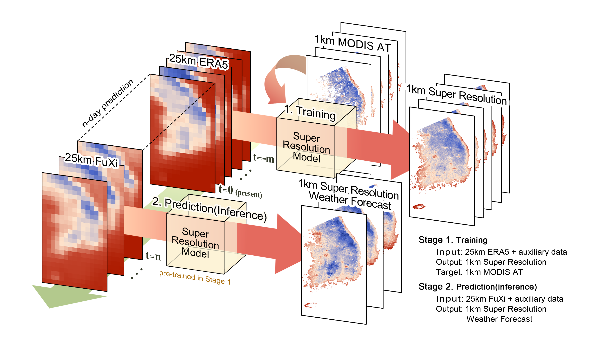

Selected Work
Highlighted Research
Projects that best represent my current research direction and methodological interests.
04
Bridging Aerial and Satellite Image Domains for Super-Resolution via Learnable Degradation
Bridging Aerial and Satellite Image Domains for KOMPSAT-3 Super-Resolution via Learnable Degradation
02

A Super-Resolution Framework for Enhancing 1-km Air Temperature Forecasts
A super-resolution framework for downscaling machine learning weather prediction toward 1-km air temperature
Research Archive
All Research
A complete overview of my ongoing and published research across remote sensing, Earth observation, climate, and environmental applications.